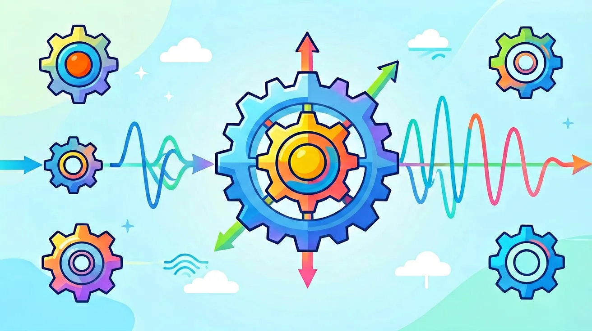

真实情境
音乐厅里的声学设计
小华参观新建的音乐厅时发现，舞台后方悬挂着许多弧形反射板，音乐家解释这是为了控制声音反射。当他走到不同位置时，听到的乐器声音清晰度有明显差异，这让他对声音的传播方式产生了好奇。
已有经验
知道声音是由物体振动产生，能通过空气传播
真正卡点
混淆机械振动与机械波的能量传递方式
本课任务
分析音乐厅声学现象中的振动与波特性
1. 你能举出三个生活中机械振动的例子吗？2. 为什么说声波是纵波？3. 当两列水波相遇时，水面会怎样变化？
1. 一个弹簧振子的周期与哪些因素有关？2. 计算频率500Hz的声波在空气中的波长（声速340m/s）。3. 解释为什么救护车驶近时笛声音调会变高？
常见误区1：认为波传播时介质会随波迁移。错因：混淆了波的传播与介质运动。诊断：通过漂浮物在水波中只上下振动不随波移动的实验观察来纠正。常见误区2：认为所有波都需要介质。错因：将机械波特性泛化到所有波。诊断：对比电磁波可在真空中传播的特性来澄清。
设计实验：探究弦长、张力和线密度对弦乐器音高的影响。要求：1.列出实验器材；2.说明控制变量方法；3.预测并解释可能观察到的现象。通过这个设计任务，迁移应用驻波和频率公式的知识。
先独立作答，再点选项查看对错与错因。
音乐厅反射板主要影响声波的哪个特性？
小提琴弦振动产生的声波在空气中传播时，
下列哪项最能说明机械波的能量传递？
音乐厅座椅采用多孔吸音材料是为了减弱声波的____现象。
答案：反射
吸音材料减少声音反射造成的混响
当声波从空气进入水中时，频率____（填变化情况）。
答案：不变
频率由波源决定与介质无关
关于横波与纵波，正确的是
用不同松紧程度的橡皮筋探究波速影响因素
❓ 为啥琴弦振动能发出不同音高？
❓ 声波在空气里传播时，空气分子真的在往前跑吗？
❓ 为啥地震波有的能穿地核有的不行？
学完这一课，这些问题你都能自信地回答。
✅ 区分波速（介质决定）与波长（与频率反比）
💡 混淆波动方程v=λf中各变量关系
✅ 强调横轴是时间还是空间坐标
💡 未建立时空二维思维模型
口诀：回复力总指平衡位，能量守恒来回费
类比：波传播像人浪表演，人不动而浪向前
